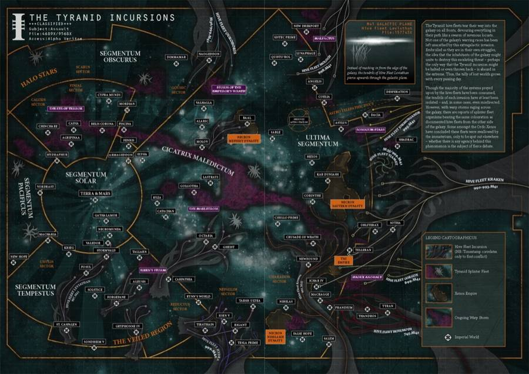

Tyranids
| Tyranids The Great Devourer | |
|---|---|
Glyph of the Tyranid hive fleets, as catalogued by the Ordo Xenos Artwork © Games Workshop | |
| Classification | Xenos; bio-engineered swarm-species, consumes all organic life |
| Origin | Beyond the galaxy; first logged in the Eastern Fringe |
| Controlling intelligence | The Hive Mind; its presence in the Warp is the Shadow in the Warp |
| Forms | Hive fleets and their tendrils; swarms of bioforms; Genestealer vanguard |
| First Imperial contact | 745.M41 (Tyran Primus; possible earlier records sealed) |
| Strength | Beyond count; every consumed world adds biomass |
| Major hive fleets | |
| Hive Fleet Behemoth, Hive Fleet Kraken, Hive Fleet Leviathan, Hive Fleet Gorgon, and the tendrils of the Fourth Tyrannic War | |
| Principal wars against the Imperium | |
| First Tyrannic War (Battle of Macragge, 745.M41); Second (Ichar IV, 997.M41); Third and Fourth (997.M41 onward); the Octarius War | |
The Tyranids, also called the Great Devourer, are an extragalactic xenos species and the most feared of the Imperium's enemies after Chaos. They are not a civilisation in any normal sense but a single organism of enormous scale, whose parts are the swarms of living warriors, ships and weapons that descend upon a world and consume it. Every Tyranid is a part of the Hive Mind, a gestalt consciousness that directs the swarms across space and whose presence, felt as a shadow upon the Warp, is the Shadow in the Warp. The Tyranids do not conquer or rule. They harvest the biomass of a world, which is then used to build the next generation of the swarm, and they move on.[1][2]
The Imperium first recorded a Tyranid fleet in 745.M41, when Hive Fleet Behemoth struck a research station of the Adeptus Mechanicus at Tyran Primus in the eastern fringe. The Ordo Xenos suspects that its agents had encountered the species long before. It has noted traces, in sealed files, of Tyranid-like organisms in the records of the 35th millennium. In the centuries since, three major hive fleets and a number of smaller ones have reached the Imperium, and each has devoured entire sectors. In the Era Indomitus, the Tyranid threat has grown at the very time when the Imperium is least able to resist it.[3][4]
Nature of the Tyranids
[edit]The Hive Mind
[edit]The Tyranids are controlled by a distributed psychic consciousness, the Hive Mind, whose scale and nature are not fully understood. It does not think in a way that a human can follow. It acts on the needs of the swarm, which are to eat and to learn, and has the power to adapt its forms to any enemy. Each hive fleet is a separate arm of the Mind, and the Mind communicates with them across space through synapse creatures, large bioforms such as the Hive Tyrants and Tyranid Warriors, whose presence directs the lesser creatures. If a synapse creature is killed, the creatures under its command revert to animal instinct, a weakness which the Imperium has often exploited.[1][5]
The Shadow in the Warp is a darkness that psychics sense in the Warp near a hive fleet. It interferes with the Astronomican and with astropathic messages, and prevents warp travel, and it can drive psykers mad. Navigators have described it as a hunger without a face. It extends across the space between worlds before the fleet arrives and blinds an endangered system to its coming. This is the reason that Imperial worlds so often fail to send warning of an attack.[1][3]
Bioforms and evolution
[edit]The Tyranids do not manufacture their weapons. Their organisms are grown, from ships down to the smallest scuttling thing, and each is shaped to a single function. The great bioships carry the swarms across the void and are themselves living, equipped with spore chimneys, drop pods and digestive pools. A landing swarm consists of vast numbers of small, fast creatures, the Termagants and Hormagaunts, and of larger beasts, among them Carnifexes, Tyrannofexes and Trygons, that are bred to break fortifications. Genestealers, the vanguard of the swarm, are the most dangerous of the small forms and are discussed below.[1]
A hive fleet learns from every war. A Tyranid swarm that meets a new weapon will, in time, produce forms resistant to it. The Imperium has seen this in repeated wars: fleets that fought Space Marines returned with armour proof against bolter rounds, and fleets that fought the T'au developed an immunity to their energy weapons. The Tyranids also take genetic material from the creatures they eat, and what is consumed on one world appears on the next as a new form. A fleet that has devoured many species is therefore more dangerous than one that has not.[1][5]
Genestealers
[edit]The genestealer is the vanguard of the Tyranid invasion. Individual genestealers are carried on drifting hulks and spore-pods ahead of the main fleet to infiltrate a world, where they breed with its inhabitants and create a hybrid cult that will rise at the right moment. This is a separate subject, treated in the article on the Genestealer Cults. The Imperium has long known that genestealers travel on the derelict hulks of the Warp, and that a world that has acquired a genestealer cult is often a world that will be attacked.[1][3]
The Tyrannic Wars
[edit]
First Tyrannic War
[edit]The first major Tyranid fleet to be recognised by the Imperium was Hive Fleet Behemoth, which the Inquisitor Fidus Kryptman of the Ordo Xenos named after the monsters of Terran myth. Behemoth struck the research station of Tyran Primus in 745.M41, and in a short time it had stripped the planet bare. The Mechanicus adepts accompanying Kryptman recovered information that a Magos had hidden in a bore shaft before the swarm overran him, and from this the Ordo Xenos was able to warn the Imperium. Behemoth moved on through the eastern fringe, destroying Occulus and other worlds in its path, and in the same year it reached the Ultramarines' realm of Ultramar.[6]
The decisive battle was fought at Macragge, the Ultramarines' homeworld. Warned by Kryptman, Chapter Master Marneus Calgar had made preparations. The Ultramarines and the Imperial Navy fought the swarm at the polar defences of the Fortress of Hera and in the orbital dockyards. Behemoth was broken at the Battle of Macragge, but at the cost of the Chapter's entire First Company, who died holding the northern defences. This was the end of the First Tyrannic War. Splinters of Behemoth survived, and several have returned to the Imperium in later centuries, under different names such as Hive Fleet Gorgon.[6][5]
Hive Fleet Gorgon and the eastern fringe
[edit]Hive Fleet Gorgon, a splinter of Behemoth, struck the T'au Empire in 899.M41 and for four years ravaged the worlds of the eastern fringe. It adapted rapidly to the T'au's energy weapons. The T'au colonies of Sha'draig, Ho'sarn and Ka'mais were devastated, and a hidden Necron fleet destroyed the bioships that attacked Ka'mais, only to take the planet for itself. In 903.M41 the T'au and the Imperium's Astra Militarum destroyed Gorgon in a rare joint operation, in which both sides lost several colonies. The war shows that the Tyranids can force enemies to cooperate where nothing else will, and Imperial planners have kept it in mind.[1][5]
Second Tyrannic War
[edit]The Second Tyrannic War began about 250 Terran years after Macragge, with the arrival of Hive Fleet Kraken. Imperial officials in the eastern fringe at first ignored the warning signs. Worlds in the east erupted in unrest and revolt, and the Ordo Hereticus found that a number of dissenting Administratum adepts had a common link: all had at some time been in the south-east. The cause was a network of genestealer cults that had been preparing the way for Kraken. The Brotherhood cult of the hive world of Ichar IV rose in the last days before the war and was put down only with great effort, but by then the fleet was already in the Imperium's territory.[7][3]
Kraken did not attack as a single mass, as Behemoth had. It divided into hundreds of small fleets that enveloped whole systems before reinforcements could reach them, and thousands of Imperial worlds were lost. The war was ended, in 997.M41, by two victories. The Ultramarines broke the back of the invasion at the Battle of Ichar IV, where a force under Captain Uriel Ventris defended the hive world against the combined swarm and its cult, and the craftworld of Iyanden, which had been besieged, held out against a Kraken tendril, at the cost of most of its population. The Imperium has since found that the Kraken's splinters are still active, in particular in the sectors near Iyanden.[7][5]
Third and Fourth Tyrannic Wars
[edit]Hive Fleet Leviathan, the largest of the fleets that have been recognised by the Imperium, arrived in 997.M41. Unlike Behemoth and Kraken it did not enter from the east. It appeared from below the plane of the galaxy and attacked from two directions at once, cutting off large parts of the galaxy from help. The Third Tyrannic War began with its coming. Inquisitor Lord Kryptman, who had by then become a power in the Ordo Xenos, proposed a desperate stratagem, known as the Kryptman Gambit. A large part of the fleet was diverted by psychic and other means into the Ork empire of Octarius, where the crowded Ork cities, rich in life, could not fail to attract it. The result was the Octarius War, a long struggle between the two xenos species that has since kept a part of Leviathan away from the Imperium.[8][4]
Not all of Leviathan went to Octarius. A great tendril struck Baal, the world of the Blood Angels, in the early Era Indomitus, and was defeated there by the Chapter and its successors of the Sanguinary Brotherhood, helped by a force of daemons of Khorne under the Bloodthirster Ka'Bandha, an assistance that the Blood Angels did not seek. With this the Third Tyrannic War came to an uneasy end. Leviathan then altered its approach and fell on the weaker regions of the Segmentum Pacificus in the west, while the Imperium's strength was committed to the Indomitus Crusade. The swarms known as Hive Fleets Grendyllus, Nautilon and Promethor are part of this new assault, which Imperial historitors call the Fourth Tyrannic War.[8][4]
Imperial response
[edit]Exterminatus and the Kryptman option
[edit]The Imperium's standing response to a Tyranid fleet is to deny it food. Doctrine holds that a world that cannot be defended should be rendered useless, and the Inquisition has authorised the use of Exterminatus, or the devastation of whole worlds, to deny the swarm. The Kryptman Option, named after the Inquisitor, is the extreme form of this: a plan to destroy every world in the path of a hive fleet. It has been used sparingly and has been bitterly opposed by many officers. The alternative, the Kryptman Gambit, is more subtle and is now preferred.[3][4]
Allies and unlikely partners
[edit]Because the Tyranids threaten every species in the galaxy, the Imperium has more than once fought on the same side as xenos. It has fought alongside the T'au at the end of Hive Fleet Gorgon, and in Imperial accounts the Aeldari craftworld of Iyanden and the Ultramarines fought on the same front at the end of the Second Tyrannic War, although the craftworld denies any coordination. The Necrons, who regard the Tyranids as a threat to their own plans, have also fought them, on one account at Devil's Crag on Gehenna, where the Silent King is reported to have joined forces with the Blood Angels. The Ordo Xenos is divided on whether to seek such alliances. Many inquisitors argue that it is better to let the xenos destroy each other than to stand against the swarm alone.[5][3]
The Era Indomitus
[edit]The Great Rift has made the Tyranid threat much worse. Hive fleets have found it easier to enter the galaxy, and the Imperium is poorly placed to resist, since its attention is drawn by the Black Crusade, the Rift's daemon incursions and the Indomitus Crusade. The Ordo Xenos records several Tyranid fleets besieging the Imperium at once, and reports the cult uprisings that herald them. The Imperial Guard and the Adeptus Astartes have been forced to fight in the most difficult theatres with the least information. Imperial staff officers are reported to rank the Tyranids alongside Chaos in strategic priority.[4]
The Ordo Xenos fears that Leviathan's western assault is not the last. Reports from beyond the galactic edge say that further hive fleets are approaching, and some Navigators hold that they are drawn by the light of the Astronomican. Whether the Tyranids can be stopped by any method is the greatest open question of the Imperium's wars. The Inquisition continues to observe the fleets and has not yet found a weakness that works twice.[3][4]

Imperial attitudes
[edit]The Imperium regards the Tyranids as the clearest example of an enemy that cannot be reasoned with, and the Imperial Cult describes them as a punishment for failing to keep faith. The Space Marine Chapters have a long and bitter tradition of fighting them. The Ultramarines took the greatest part in the first two wars, and the Blood Angels in the third. The Space Wolves, Salamanders, Dark Angels and many others have lost brothers to them. The Deathwatch keeps special kill-teams for Tyranid hunting, and the Adeptus Mechanicus studies them with an unusual interest, as its Magi believe a Tyranid is a mathematical perfection of a kind.[5][1]
Timeline
[edit]| Date | Event |
|---|---|
| Before M41 | The Hive Mind spreads across the intergalactic void and consumes the worlds of its home galaxy.[a] |
| Early M41 | The first Hive Fleet crosses the Milky Way's rim and the First Tyrannic War begins.[b] |
| 993–997.M41 | The Second Tyrannic War ends with the defeat of Hive Fleet Kraken, and the Third Tyrannic War begins less than five years later. |
| 997.M41 | Hive Fleet Leviathan arrives in the Milky Way. |
| 998–999.M41 | The Devastation of Baal: Tyranid forces strip the Baal System. |
| 999.M41 | The Great Rift opens, and the Tyranid hive fleets are cut off from their Hive Mind by the Warp storms.[c] |
| Early M42 | The Tyranid swarms remain across the galaxy, and the Indomitus Crusade fights them in Ultramar and the Imperium Nihilus.[d] |
See also
[edit]
Notes
[edit]References
[edit]- ^ a b c d e f g h Codex: Tyranids (8th Edition), pp. 6-33, 40-41, 52. Games Workshop. Abnett, Dan et al.. Lone Wolves (Graphic Novel). Black Library.
- ^ McNeill, Graham. Priest of Mars (novel). Black Library. Mitchell, Sandy. The Last Ditch (novel). Black Library.
- ^ a b c d e f g Mitchell, Sandy. The Greater Good (novel). Black Library. McNeill, Graham. Warriors of Ultramar (novel). Black Library.
- ^ a b c d e f Codex: Tau Empire (6th Edition), pg. 35. Games Workshop. Codex: Tyranids (6th Edition), pp. 6-35, 88, 91, 167-185. Games Workshop.
- ^ a b c d e f g Warhammer 40,000: Rulebook (6th Edition), pg. 175. Games Workshop. Codex: Blood Angels (5th Edition), pg. 17. Games Workshop.
- ^ a b Codex: Imperial Guard (5th Edition), pp. 18, 23-24, 27. Games Workshop. Codex: Space Marines (5th Edition), pp. 30-33, 40. Games Workshop.
- ^ a b Codex: Space Wolves (5th Edition), pp. 19, 21. Games Workshop. Codex: Tyranids (5th Edition), pp. 6-30, 41, 46, 48, 50, 82-84, 86-95. Games Workshop.
- ^ a b Warhammer 40,000: Rulebook (5th Edition), pg. 166. Games Workshop. Codex: Eldar (4th Edition), pp. 52-53. Games Workshop.